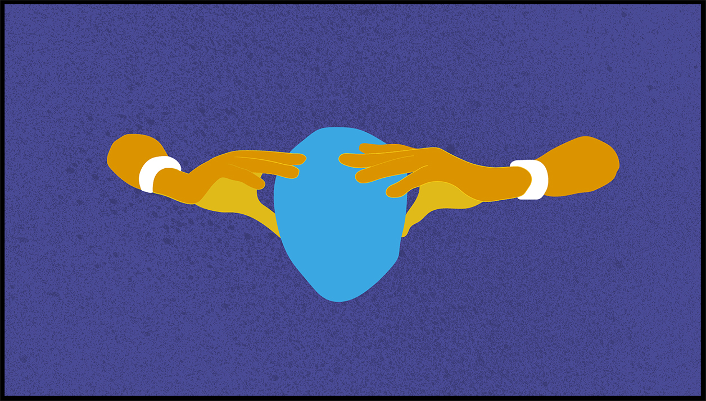
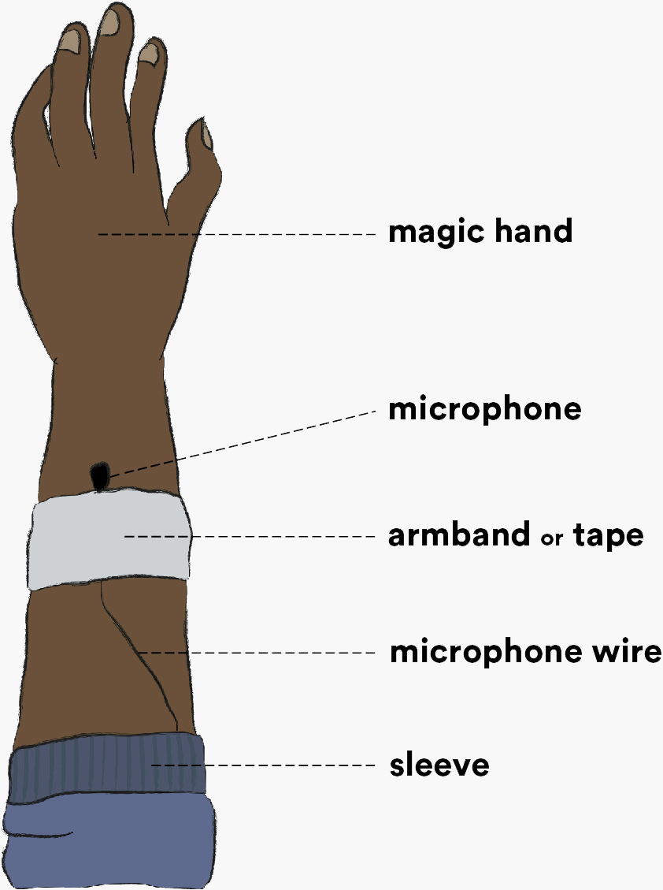
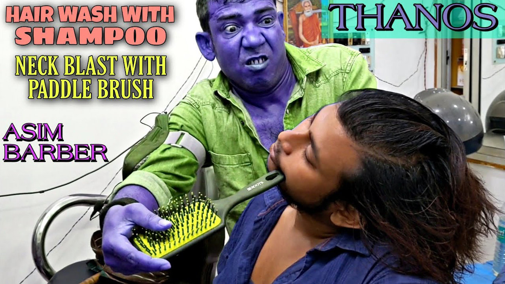
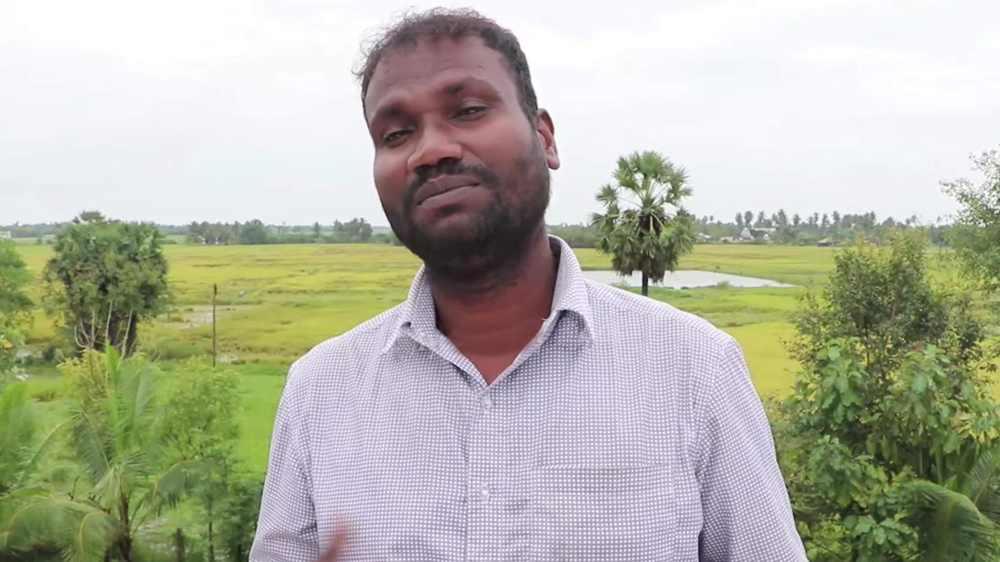
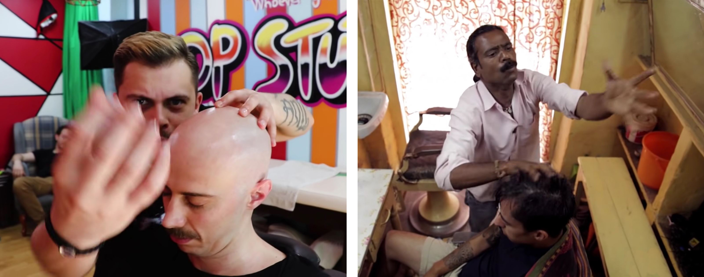

WALL OF TEXT
ASMR Barbers: The Medium is the Massage
20 March 2021
Like thousands before me, I watched a man in Tiruppur rub limes on his face for seven and a half minutes. This was my introduction to ASMR barbers — a bewildering experience that gradually turned into a sense of intrigue and, admittedly, relaxation.
To be fair, this wasn't your typical ASMR barber video. These videos generally feature barbershop massages, often in India or Turkey, though the genre has expanded into many other contexts. While people watch these videos for a variety of reasons, many viewers turn to them for relaxation and better sleep.
These videos are fascinating on so many levels. You could trace the continuities (and discontinuities) from centuries-old practices in South Asia and the Middle East. A gender perspective would also be interesting, looking at the changing role of women in this male-dominated profession.
But I really don’t know much about these things, so I’ll leave a few observations from a perspective I’m a bit more familiar with, that is media studies.
Cutting Edge
ASMR barbers have pioneered a new genre, and like true pioneers, they are highly resourceful. With no examples to follow, many barbers had to experiment with video equipment, often starting with the smartphones they had on hand.
In some cases, the success of a barber’s channel can be tacitly perceived when they upgrade from smartphones to dedicated video cameras — DSLRs, mirrorless cameras or camcorders. In this way, video equipment becomes an investment with an anticipated return, alongside scissors and electric razors.
At the time of writing, "ASMR" is the 13th most popular search term on YouTube. A whole range of audio equipment is targeted at the genre, yet nothing of the sort exists for barber massages.
In this absence, one piece of equipment has emerged as a quasi-industry standard — the armband microphone. This DIY rig has been widely adopted among ASMR barbers from Indonesia to Turkey, who MacGyver a lavalier microphone to their arm with an armband or piece of tape. It's a simple, inexpensive and truly versatile piece of equipment.

The armband lavalier, a DIY microphone rig.
Narrative
YouTubers have to compete for attention in an oversaturated media landscape, employing techniques from the capitalisation of titles to clickbaiting with the evermore absurd. Rising above these pedestrian tactics are the barbers who take it one step further, using props and performance to engage their viewers' imagination.
The performative element is readily apparent with some barbers literally performing, inserting their massages into a dramatised story. In one video, a barber relieves a passerby carrying heavy bottles of water; in another, the barber kidnaps someone to give him a massage.
These narrative devices allow the barber to leave the barbershop, placing the familiar massage in an unfamiliar context, such as a playground, river or open field. There’s a curious link to pornography here, with the use of roleplay to engage viewers’ imagination. All the more, it doesn’t take itself too seriously, often remaining self-aware and rather camp.

Asim depicted as the Marvel character Thanos in a YouTube thumbnail.
This is a nascent cinematic universe and Asim is one of its most iconic characters. Known for his theatrical performances and aggressive cracking, he has been likened to an “assassin” with his clients dubbed his “victims.”
Asim and his friend Rintu have embraced this honorific, using it in video titles ("Killer asim barber ASMR massage"), thumbnails and even storylines. In this way, his videos become multi-genre, going beyond the sensory to encompass the dramatic and comedic. The cult of Asim is further evinced by a dedicated YouTube channel that remixes his videos into movie trailers and memes, an act equal parts parody and fan fiction.
This marketing savvy raises audience engagement to another level, responding to viewers’ comments and including them in the creative process. The massage is thus expanded into a three-way relationship between barber, client and audience. In this way, the client is no longer the primary beneficiary of pleasure, but becomes a surrogate for the viewer.
Of course, the vast majority of ASMR barber videos aren’t so theatrical. This genre remains centered around traditional barbershop massages, which are often documented from an observational perspective.
European-run channels like ASMR Barber and Nomad Barber take on a quasi-ethnographic approach, documenting barbers across various countries. Taken individually, their videos do not present a narrative, but on a collective level, they bring viewers on a cultural journey in a form of virtual tourism.
"
YouTuber Massimo Tarantelli enjoys a head massage and some neck cracks from Manoj Master.
Economic Improvement
We may think of YouTube as free, but we really are pumping money into a silent economy with every click and minute of watch time. This lends some credence to Adorno and Horkheimer’s critique that “entertainment is the prolongation of work under late capitalism.”
Interestingly, many people enjoy ASMR videos because of their relaxing quality, feeding into the notion of leisure time as a means to recuperate between working hours, that is to keep society economically productive.
The political economy of YouTube is an important issue, but one that falls beyond the scope of this "article." Rather than critique ad sales, we'll acknowledge that a portion of this revenue is redistributed to the barbers themselves, and that platforms like YouTube have expanded these barbers' market to a global audience.
In some cases, the financial and material impact is noticeable, with a gradual improvement in production quality, tools and working/living areas. YouTube has become a job, and the returns have justified further investment. It may even become a family business, with friends and family getting involved or setting up channels of their own.
In one video, Sakthivel offers some insight into life behind the camera. His crops were destroyed by excessive rain and his barbershop remains closed due to Covid-19 restrictions; but he also plans to upload more videos and help his wife with her food channel.
Sakthivel is also notable for branching into more mainstream forms of ASMR, which focus on aural experiences. While YouTube is itself a precarious profession, Sakthivel’s experience shows how some barbers are able to diversify their income in the context of climate change and a global pandemic.

Sakthivel gives his viewers a channel update, talking about life behind the camera. Image taken from his channel.
International Community
Sakthivel shares another important insight — his YouTube career has far more support internationally than within his local community, where he's seen as a madman who shakes his hands in front of a camera.
The ASMR barber community might be niche, but it’s one without borders. Look at the comment section and you’ll find viewers from the Netherlands to Uganda, people from all walks of life united by a desire to relax — and the intermittent person having a laugh at the seeming strangeness of it all.
Beyond viewership, the number of barbers producing ASMR videos appears to be increasing. Barbering has a long history with roots in many cultures, providing fertile ground for new iterations of the ASMR barber. This growth is both a sign of appreciation, as well as a recognition of these videos' marketing and revenue-generating potential.
While barbers often bring their own spin to videos, there is a clear discursive element with barbers responding and learning from each other, be it in the adoption of massage techniques or production practices. Indeed, many barbers pay homage to the late Baba Sen (Baba the Cosmic Barber), who is widely recognised as the founding father of ASMR barber videos.

Real recognise real. Turkish barber Anil Çakmak (left) pays homage to Baba the Cosmic Barber (right).
Images taken from ASMR Barber and Nomad Barber.
Images taken from ASMR Barber and Nomad Barber.